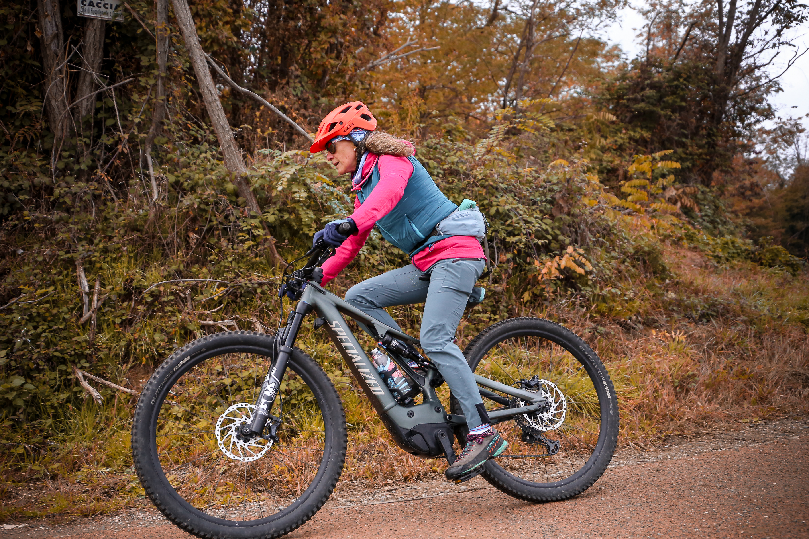
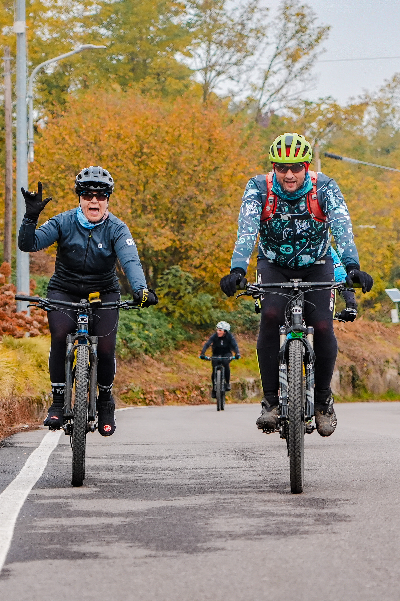

Gravel & Wine returned to Serravalle Sesia, in Italy’s Piemonte region, for its third edition on Sunday, 8 November, bringing riders together for an autumn journey through the surrounding countryside.
The event was non-competitive and open to gravel and mountain bikes, placing shared experience and access for different ability levels ahead of rankings.
Two routes through hills and vineyards
Participants could choose between 50 km and 80 km routes. Both crossed the area’s hills, vineyards and unpaved roads, using the varied terrain to connect the ride with the landscape.


From the route to the local table
The day concluded at Ca’ dal Lanternon in Bornate, where the programme brought participants together for lunch featuring local products.
That combination of riding, landscape and food gave the event its character: a day shaped as much by the company and territory as by the distance travelled.
Image Media coverage
Reporting: IM News Editorial Desk
Coverage photographers: Giorgia Donato and Miriam Barbero
Date, location, format, routes and finish programme checked against Team Locca and ENDU event information.